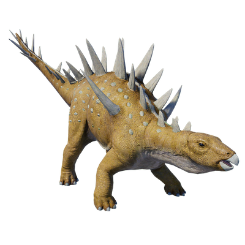

Useful Website
Chungkingosaurus is an herbivorous dinosaur from the stegosauria suborder and gets its name from the location of its discovery, Chongqing in Sichuan, China. At around 9m in length, Chungkingosaurus is one of the smaller Stegosauria, with distinctive spikes adorning its neck, back and tail that help it to protect itself from predators.
